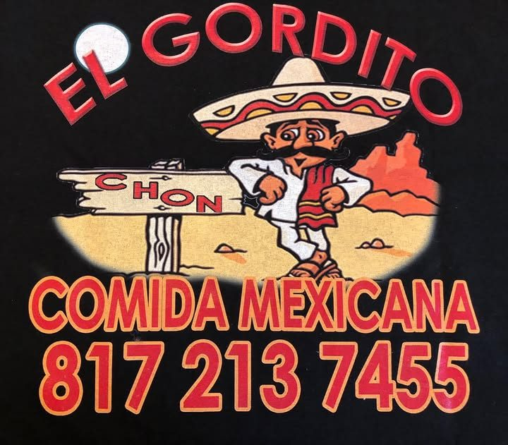
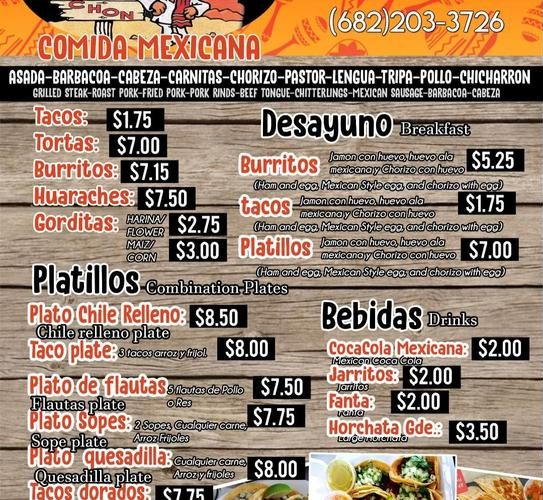
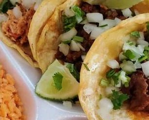

Tacos, tortas, burritos, huaraches, gorditas y más, directo de la troca roja. Birria, al pastor, carnitas… tú escoges la carne.
Straight from the truck's own menu board:
Menu names come from a photo of their board. Online, we'd keep prices live and editable so they're never out of date.

Todos los días8 AM – 6 PMper public listing; confirm with owner
6212 Denton HwyWatauga, TX 76148Con mesas, para llevar y recoger.
